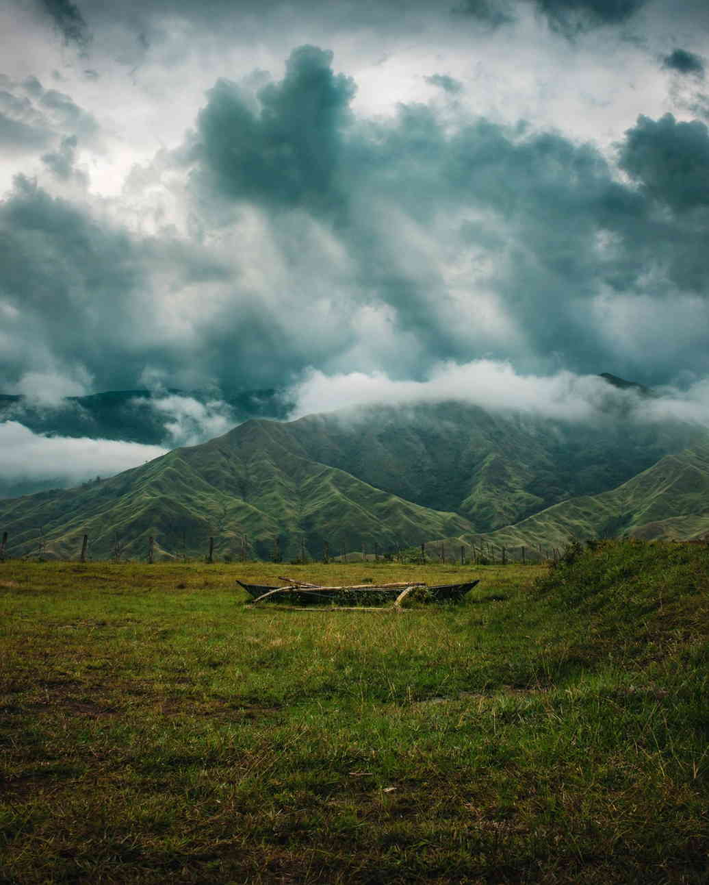

Bukidnon sits on a high plateau in the middle of Northern Mindanao, and most of what draws people here is the land itself: volcanic peaks, grassland ridges, pine parks, crater-like lakes and waterfalls that drop into deep river gorges. The province has no coastline, so a trip here is about cool air, wide views and early starts.
This guide groups the best Bukidnon tourist spots by what they offer, whether that is a summit, a park for an easy afternoon or a viewpoint for photos. It also flags which places need permits, guides or a bit more planning, because a few of the big mountains are not walk-in hikes.
Distances in Bukidnon are longer than they look on a map. The Sayre Highway runs north to south through the province, linking Manolo Fortich, Malaybalay, Valencia and Maramag, and most spots below sit a short ride off that road. Plan by corridor and you will spend more time outside and less time in a van.

Mountains you can actually climb
Mt. Capistrano, Malaybalay
The easiest summit with a big payoff. Mt. Capistrano rises to about 793 metres in Barangay Simaya, roughly 20 kilometres from the Malaybalay city centre on the road toward Davao. Most hikers reach the top in about an hour. Near the summit, limestone rocks break through the grass, and on a clear morning you can pick out the Kitanglad and Kalatungan ranges across the valley. Hikers sign in and pay a small registration fee at the jump-off. Go early, because the open slopes get hot by mid-morning and clouds tend to roll in after lunch.
Musuan Peak, Maramag
Musuan Peak is a 646-metre lava dome next to Central Mindanao University, about 4.5 kilometres south of Valencia. It is listed as an active volcano, with recorded eruptions in the 1860s, though it has no visible crater. Students, teachers and families climb it for the view over the campus farms. Toll fees from hikers go toward reforestation on its slopes, so ask at the university side before you head up.
Mt. Kitanglad and Mt. Kalatungan
These two ranges hold some of the tallest peaks in the country, and both are serious climbs. Mt. Kitanglad is a protected area: climbers need a permit from the Protected Area Management Board, and tribal elders hold a ritual before groups go up. Climbing without these steps can lead to heavy fines under the Mt. Kitanglad Range Protected Area Act. Mt. Kalatungan made the news in June 2026, when a hiker who had not secured a permit went missing on its slopes. For either mountain, book through an accredited local organiser, check whether the trails are open, and do not go without a guide.
Parks for an easy day
Kaamulan Park, Malaybalay
This pine-shaded park in the provincial capital is where the Kaamulan Festival gathers Bukidnon's seven indigenous tribes each year. Outside festival season it is a quiet green space with a creek, horse rides, joggers and ice cream carts. It works well as a rest stop on a road trip or a slow first afternoon after a long bus ride up from the coast.
The Dahilayan parks, Manolo Fortich
Up near the foot of Mt. Kitanglad, Dahilayan has two separate parks with their own gates: one built around ziplines and thrill rides, the other a resort-style forest park with gentler activities. Fees, shuttles and which gate suits which group are covered in our Dahilayan Adventure Park guide.
Lakes and scenic views
Lake Napalit, Pangantucan
Lake Napalit lies at about 1,041 metres in Barangay Pigtauranan, below the Kalatungan Range and about a kilometre from the smaller Lake Mata. It is a tectonic lake roughly 1.75 kilometres long, with forested hills around it and mist that often hangs on the water in the early morning. Getting there takes a long ride off the main highway, so set aside most of a day and arrange a local driver in Pangantucan.
Lake Pinamaloy, Don Carlos
Lower and warmer, Lake Pinamaloy covers around 60 hectares in Don Carlos in southern Bukidnon. It supplies the town's drinking water and sits inside a forest reserve, so treat it as a place for a quiet walk and photos rather than swimming. It pairs well with Maramag and Musuan Peak on the same side of the province.
Pineapple country and Alalum Falls
Driving south from Cagayan de Oro, the land opens into pineapple plantations around Manolo Fortich, with rows of fruit running toward the hills. Farther on, Alalum Falls drops about 45 metres in Barangay Kisolon, Sumilao, on the river that divides Sumilao and Impasug-ong. It sits close to the Sayre Highway, but the stairs down to the pool are steep and turn slippery after rain, so wear shoes with grip.
How to group the spots by area
Bukidnon is easier to explore one stretch at a time. These groupings keep the driving reasonable:
- North (half a day from Cagayan de Oro): the pineapple plantations, the Dahilayan parks and Alalum Falls.
- Centre (base in Malaybalay): Kaamulan Park, Mt. Capistrano and the city's eateries.
- South-central (base in Valencia): Musuan Peak, Lake Apo and the start of the road to Pangantucan for Lake Napalit.
- Far south: Lake Pinamaloy in Don Carlos, best added on the way to or from Davao.
For a two-day route through Malaybalay and Valencia, including the Abbey of the Transfiguration and Lake Apo, see our Bukidnon road trip guide.
Weather, roads and what to bring
The plateau is cooler than the coast, and nights in the higher towns can be chilly enough for a jacket. Rain can come in any month, and afternoon clouds often hide the mountains, so plan hikes and viewpoints for the morning. Pack a light rain layer, walking shoes with grip and cash, since smaller spots and roadside stalls may not take cards.
Habal-habal motorcycles are the usual way to reach trailheads and viewpoints off the highway. Agree on the fare and the waiting time before you set off, and ask the driver to stay if there is no other ride back. Many visitors start their trip in Cagayan de Oro. If you have a spare day there, our guide to white-water rafting in Cagayan de Oro rounds out a Northern Mindanao trip.
For anything with a permit, fee or opening schedule, call ahead or check with the municipal tourism office in the town you are visiting, as rules on the mountains in particular can change from season to season.


Comments
No comments yet. Been here recently? Share a tip or ask a question.
Leave a Reply